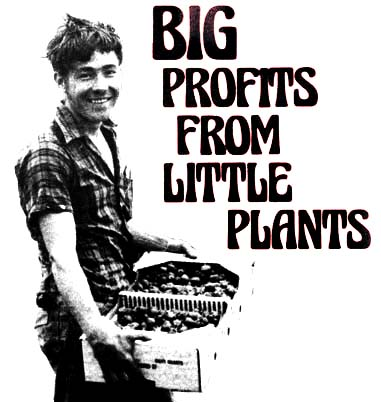
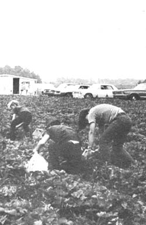
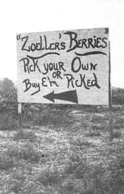

Two thousand dollars per acre with only average production, and double the money for exceptional results . . . that's what strawberries can do for you. What better helper could you find to pay off the mortgage on the old homestead?
Of course-as my neighbor John Zoeller would be quick to tell you-a modest amount of work (mostly supervisory) goes into this fine cash crop. But that fact doesn't keep the young New Riegel, Ohio grower from looking forward to his next year of raising and marketing berries as a sideline.
Back two springs ago-when he found that his regular 40-hour job left him with plenty of evening working time after the switch to daylight saving-John decided he could stand more action, and started looking into the glowing reports he'd heard about the strawberry business. The big, luscious specimens pictured in nursery catalogs were as hypnotic as the shining disc swinging from a mesmerist's bony fingers, and the growing instructions almost implied that anyone could produce a bountiful crop by waving a magic wand.
However, Zoeller-born and bred on a farm-wasn't easily fooled. He knew that only weeds are that simple to raise. To learn the sweet and sour sides of strawberry culture, he visited an established commercial grower . . . and was startled to find that the records he examined there made the catalog claims look almost modest!
Once he knew the idea was sound, John's next question was, "Where do I plant my cash crop?" There was no space around the house he rented, so Zoeller propositioned his father-a successful nearby farmer with plenty of acreage-for a sliver from one of his fields.
Wilfred Zoeller enthusiastically endorsed his son's idea. He even suggested that more land be devoted to the undertaking so that John's two teenage sisters could share in the project. After talking it over, the family agreed that two or three acres between the farmhouse and the highway-where customers could park safely along the lane leading to the Zoeller house-looked like a good location. They decided to set out two and a half acres of strawberries immediately (so they'd have fruit to sell the following spring).
Since the budding strawberry tycoon hadn't had his inspiration until mid-May-six weeks past the crop's recommended planting time for John's area-time was short. Two decisions had to be made quickly: what variety of plants to buy, and where to purchase them.
Trying to make such a choice from the lush descriptions and pictures in a catalog is a real embarrassment of riches. Fortunately for the beginning grower, the Rayner Bros. Berry Book (available free from Rayner Bros., Inc., Salisbury, Maryland 21801) gives a very helpful box score under the heading "Characteristics of Some Strawberry Varieties".
The Rayner list rates various types of strawberries and judges which are best for certain qualities: flavor and excellence for general home use; goodness for freezing, and for making preserves; firmness; large size; high yields; vigor and growth in poor or dry land; suitability for cold climates, and for the Southern States: resistance to red stele, verticillium wilt and leaf troubles.
Surecrop was picked as the best variety for nine of these twelve criteria, and Zoeller was tempted to order nothing else. However, the neighboring berry producer-who had grown strawberries for several seasons-was high on a variety called Midway, and John ended up sending for plants of both kinds.
Dormant stock-which suffers least shock when transplanted-may be bought from many reputable nurseries if the order is placed early enough in the year. As the season progresses, however, plants awaken by geographical area . . . early in the South, later in the North. To be secure, Zoeller sent for his supply from a grower in the shadow of the Straits of Mackinac Bridge in northern Michigan.
With the order safely placed, John began to think about planting. Space recommendations for strawberries vary as much as politician's promises, but Zoeller decided on rows 42 inches apart with 22 inches between plants. That worked out to something like 7,500 sets per acre . . . a grand total of 18,000 for the planned area.
"Eighteen thousand individual seedlings . . . each of which must be placed in its own hole!" thought John. "Wow. Even if I waddle along like a tortoise and set every one of the plants with one hand while I cover and irrigate it with the other, it'll take me all summer just to put them in the ground." Zoeller's tension was finally eased when a neighbor loaned him the use of a tomato planter for the job.
While he waited for his stock to arrive, John prepared the bed carefully to give each of his purchases the best chance for survival . . . and, because strawberries should go into the ground as soon as possible after receipt, he made sure everything was ready when the shipment rolled in.
Then the work of putting out the sets began, and the young businessman found that the tomato planter-though extremely helpful-had its shortcomings. The trouble was that tomatoes aren't particular about how deep they're planted, so the implement that digs the holes doesn't need to be accurate about depth . . . and John's borrowed piece of equipment wasn't. Strawberries, however, must be set with the crown of each plant flush to the surface, and the only way to maintain this exacting depth was to go slowly and spend twice as long on the task. (Zoeller learned only later that the tool's manufacturer could have sold him a special attachment to adapt the planter for his crop.)
On top of the planting difficulties, Zoeller's whole first year in the strawberry business turned out pretty rocky. The plants were all set out by June 1, and on June 5 they were almost drowned in an inch and a half of rain. Then, as soon as the crusted earth was dry enough, the field was cultivated twice. On June 11 came another inch of downpour . . . and from that time until early September you could have counted the drops of rain on the fingers of one hand. As the earth grew parched, the Surecrop plants lived up to their reputation for drought resistance, but Midway fared badly and half of that variety was lost.
John's worries about the bad weather were partly offset by the relief of having little to do for most of the summer. Other than weeding, the only major project was the 12-hour job of picking or pinching bloom stems to encourage bigger and better berries the following year.
The first productive season of the new venture started off with a beautiful spring. Runners from the parent plants had filled the intervening spaces with strong, healthy offspring, and the buzzing bees that held a daily convention in the field ensured lots of delicious fruit a few weeks later.
Soon, as June breeze flipped the green capes of the plants to show flashes of crimson beneath, laborers sent from the state employment office began to harvest beautiful berries. (At the rate of $1.00 for every eight quarts picked, these workers earned above-average daily wages.) John also reserved a portion of each week during the bearing season for "Pick Your Own" harvesters, who paid 35 cents per quart for the fruit they gathered.
It was interesting to compare the picking methods of the two groups. The professionals-whose object was to fill their boxes as fast as possible-took all the ripe berries as they moved down a row and didn't pile fruit on top where it might roll off. By contrast, the "Pick Your Own" customers (99% housewives taking a break from dishes and dusting) were not only too selective to pluck anything less than the largest red morsels . . . but heaped each basket high enough to shame the ancient Egyptian pyramid builders. The medium and small berries which they passed up became a problem that John solved only by sending his family out to glean the rows once the do-it-yourselfers had picked them over.
The professionals' harvest was sold at the farm for 55 cents a quart, and case lots were offered stores at the same price (delivered). Though it may sound a bit ridiculous at first to set the same price for wholesale and retail sales, the reasoning was very logical. After all, local merchants normally depended on large produce houses for their supplies. and those firms in turn relied on commercial growers many miles distant By the time berries were picked in Illinois or Indiana, shipped to Toledo and delivered to stores in Tiffin and Fostoria, the fruit was firmly packed down and some of it mashed. This forced the retailer to dump, sort and refill each box before he could offer the shipment for sale. In comparison, John's fresh-picked produce-which was more attractive to customers anyway-proved to be a bargain.
Zoeller's strawberry patch was about as far off the beaten path as it could be, and he wondered whether the remote location would hurt his sales. As it turned out, he needn't worried. He solicited wholesale orders by telephone and arranged deliveries at the convenience of the merchant.
The Zoeller retail business flourished too, once low-cost classified newspaper ads and free radio publicity twice day had alerted citizens for miles around that the delicious fresh berries were ready. In fact, John's experience bore out a recent report published by the Ohio Agricultural Research and Development Center, in which Dr. M.E. Cravens states that location is no longer especially important to the sale of freshfrom-the-fields farm produce.
Out-of-the-way or not, Zoeller's business has done pretty well so far. Although he denies renting an armored truck to carry his first season's loot to the bank, John does admit that the total number of quarts picked from his two and a half acres was a strong average figure even after the plants' poor start. Over the coming months Zoeller expects to do even better than the normal expectation of 4,000 to 6,000 quarts per acre.
The same plants can't bear at that rate forever, of course, and the Ohio grower is managing his plot with an eye to the future. When John's first marketing season ended, he tilled under the east edge of every long northsouth row of berry plants. All runners were then trained toward the west, where they were contained within 12 inches to form a matted strip of new, strong plants alongside an equal width of older stock. By cultivating in this way Zoeller will renew half the bed each year, and may possibly be able to make his initial investment a final one.
There's nothing unique about this young Ohio entrepreneur's success with his cash crop. Anyone who wants to make a few hundred (or a few thousand) back-to-the-land dollars with minimum effort should be able to do it with strawberries.
If you have your own acreage, of course, you're all set . . . and if not, you can lease garden space. Everywhere-including the edges of communities-there are small tracts which are nothing but a summer weed problem to their owners. Check around. You should be able to find at least one landlord of a vacant city lot who will be happy to have you relieve him of its maintenance. Remember, also, that your operation needn't be in one piece . . . several nearby plots might work out well for you. (Your beds won't bear until the second year, of course, so make your agreements accordingly.-MOTHER.) And preparation of the soil is no problem because you can rent power equipment or hire the owner of a machine to till your ground for a small fee.
The market for strawberries appears to be insatiable, and when your plants produce you should find plenty of buyers willing to pay good prices. If you find sales slowing up at the end of the short season (usually less than a month), a discount of a few cents per quart will probably wipe out any surplus.
If you don't care to plant in volume, remember that you can still enjoy your own fresh-picked, tasty fruit . . . from as little space as the borders of your sidewalk-if you're still citybound-or from that sandy corner of your homestead that you weren't really sure what to do with. Even a window box of everbearing plants might give you a sauce dish of delicious berries several times a year. In short, strawberries are a cooperative crop and will reward you well whether you grow them for pleasure or for a very tidy profit.
|
 |
 |
 |